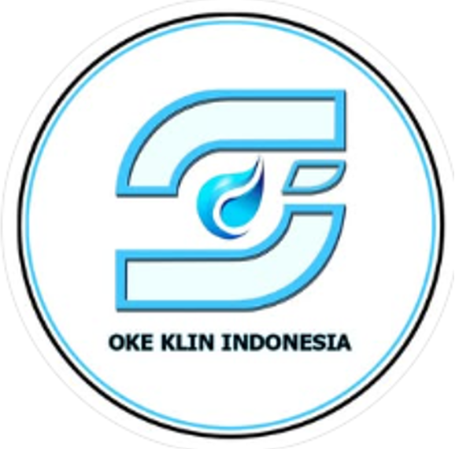

PERUSAHAAN JASA LAYANAN PEST KONTROL
Kami Perusahaan Jasa Layanan Pest Kontrol Bergerak di bidang pembasmi hama. Seperti : rayap, tikus , kecoa, lalat , nyamuk dll.
Email: anaspestcontrol@email.com
LinkedIn: linkedin.com/in/andi
instagram: instagram.com/okeklinindonesia/
GitHub: github.com/andi
Jl. H.R. Rasuna Said RT.002 RW.02 No.86,
Kel. Kunciran Jaya, Kec. Pinang
Kota Tangerang - Banten 15144, Tangerang 15144